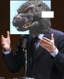
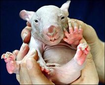

Godzilla
 De: La Frikipedia, la enciclopedia extremadamente seria.
De: La Frikipedia, la enciclopedia extremadamente seria.
| De la serie monstruos mitológicos:
|
| Godzilla
|
|
|
| Nombre Científico
|
Mutatis wombatus
|
| Hábitat
|
oceano pacifico
|
| Organización
|
cada uno zurra a su bola
|
| Actividad
|
destrucción de grandes ciudades
|
| Dieta
|
come de lo que mata
|
| Inteligencia
|
no la necesita, ya es un ser en sí perfecto
|
| Aparición
|
Tokio, EE.UU., tu casa....
|
| Número aproximado
|
1
|
| Armadura
|
está compuesta de una dura masa verde (o gris) a modo de piel cubierta por una capa de púas afiladas originada por la mutación de pelos de wombat
|
| Ataques
|
rayo atómico, kamehameha jurásico, bola de fuego, pedo sinfonico.
|
| Moral
|
lo tienes más abajo, en sus estados de animo
|
| Notas
|
Es pariente del Fary
|
Godzilla o El Dios Zilla es un monstruo oriental que vomita rayos atómicos por el morro. Sus hobbis son destruir Tokio y pegar tremendas palizas a otros monstruos (sean amigos o enemigos).
Orígenes
 Godzilla en las elecciones presidenciales de la isla de los monstuos (sí, el fotoshop se me da mal, incluso hay un trozo blanco, ¿y qué?
Para empezar Godzilla apareció porque le dio la gana, no somos nadie para decir si puede o no aparecer. Las bombas nucleares lo mutaron, pero nadie sabe que animal mutó. Muchos dicen que Godzilla es ballena-gorila, otros dicen que es un hombre disfrazado. Con todas las teorias que tenemos atrás deducimos que Godzilla es un wombat mutado. Posiblemente un wombat andaba por la central nuclear de Springfield, el wombat quiso beber el agua contaminada y mutó hasta formar a Godzilla (esta teoría fue elaborada por múltiples paleontólogos, filósofos, astrónomos, panaderos y expertos en la materia). La maldad del wombat se convirtió en una furia ciega e inimaginable (solo los filipinos y la destrucción pueden apaciguarla) y su inteligencia disminuyó un montón. Sus rayos atómicos mutaron varios animales convirtiéndolos en monstruos con los que lucharía en el futuro.
 Fase transicional de wombat a Godzilla

Nuestra tierra se quedó así debido a la contaminación nuclear y dió lugar a Bananazilla.
Filmografía
He aquí sus múltiples películas, si quieres verlas te vas al videoclub (si aún existen) y la alquilas.
- El show de Godzilla y Basil Brush
- Godzilla, King of the monsters (versión americana de la pirmera)
- Kill Godzilla
- Godzilla contraataca
- Godzilla vs Mechagodzilla
- Godzilla vs Spacegodzilla
- Godzilla vs Megalon vs Jaguar Jet vs Mothra (Es Enserio)
- Godzilla siembra el pánico
- Godzilla siembra tomates
- Godzilla se va de putas
- Godzilla coge ladillas
- Godzilla hace una peli porno
- Godzilla contra King Kong
- Godzilla le da por culo a King Kong
- Godzilla contra Bananazilla
- La muerte de Godzilla
- La muerte de Godzilla a manos de si mismo (Conocida como: Godzilla se suicida)
Sus estados de ánimo
Depende de la situación, sus estados de ánimo son:
- Enfadado: casi siempre o al despertarse
- Alegre: sólo cuando se enfada
- Confuso: Godzilla nunca piensa, con lo que no se confunde
- Triste: cuando no se enfada (nunca)
- Penezilla:cuando se excita.
- Emo: Cuando
tiene ganas de follar homosexualmente tiene impulsos suicidas
Godzilla de incognito en el dia del orgullo gay
Hijos de Godzilla
- Minilla: Hijo biológico de Godzilla. Cuando nacio godzilla dijo: ¡Mi madre qué feo!, y lo tiró al suelo, con lo que el morro se le quedó chato (aunque eso no le supuso una mejora sino todo lo contrario). En 28 películas no ha crecido ni cambiado un ápice.
- Godzilla J.R: Es el único adoptado, pero los padres lo quieren más y, como este si que crecía, la Tojo (la empresa que hace las pelis de godzilla) decidio matarlo cruelmente (un monstruo lo lanzó desde una pequeña altura y la diñó).
- Mozilla firefox: Por eso el nombre es tan parecido, este trato de ser una parodia de los wombats.
- Barney: Desafortunadamente para el, o ella es el hijo maricon indeseado por lo que aun mientras se deduce su sexo se quedo sin la herencia de godzilla.
- Timoteo: Su pariente Latinoamericano, era descendiente del Perú, ya que programas infantiles donde no se comia los niños si no que los hacia reir... su frase favorita "refurinfunflai". Murio por un dolor de muela terminal.---> VER VIDEO KARINA Y TIMOTEO
Sus multiples apodos
Todo monstruo que se precie tiene multiples nombres. A godzilla se lo conoce por los siguientes:
- Gojira, su nombre japones.
- Giganto, existe de verdad.
- Lagartijo. Su nombre cuando no saben quien es.
- Godzilirigillo. Así lo llama Flanders.
- Mutatis wombatus. Nombre científico.
- Gonzalo. Nombre de pila.
- ¡Gañan! Tal y como lo llama su madre antes de un castigo.
¿Sabías que...
- ...pese a estár emparentado con los wombats, Godzilla los odia?
- ...Godzilla usa el navegador Mozilla?
- ...y su merienda favorita son los filipinos?
- ...Su objetivo principal, es el exterminio de los Hobbits?
- ...Su primo es una morcilla
- ...Caga oro?
- ...En su segunda vida, fue arquitecto?
 Biología Biología
|
Rarezas biológicas inclasificables
|
Autor(es):
- Fordus
- Leo rain
- Khazike Khashondo
- Azulejos
- Pakirri
- Renji
- Uzuario
- Cibercrank
- Veni Vidi Vici
- Dark temptation
Frikipedia 2005-2016, Licencia
GFDL 1.2 - Extraído por FrikiLeaks